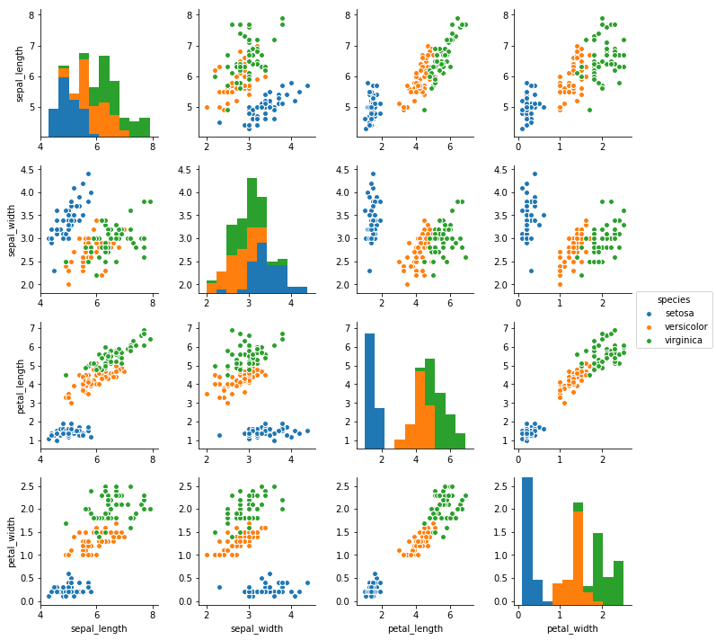

In [1]:
%matplotlib inline
import matplotlib.pyplot as plt
import pandas as pd
import numpy as np
import seaborn as sns
In [2]:
iris = sns.load_dataset("iris")
In [3]:
iris.head()
Out[3]:
| sepal_length | sepal_width | petal_length | petal_width | species | |
|---|---|---|---|---|---|
| 0 | 5.1 | 3.5 | 1.4 | 0.2 | setosa |
| 1 | 4.9 | 3.0 | 1.4 | 0.2 | setosa |
| 2 | 4.7 | 3.2 | 1.3 | 0.2 | setosa |
| 3 | 4.6 | 3.1 | 1.5 | 0.2 | setosa |
| 4 | 5.0 | 3.6 | 1.4 | 0.2 | setosa |
In [5]:
sns.jointplot(data=iris)
---------------------------------------------------------------------------
TypeError Traceback (most recent call last)
<ipython-input-5-e424f79a46d4> in <module>()
----> 1 sns.jointplot(data=iris)
TypeError: jointplot() missing 2 required positional arguments: 'x' and 'y'
In [8]:
sns.regplot(x = 'sepal_length', y = 'petal_length', data = iris)
Out[8]:
<matplotlib.axes._subplots.AxesSubplot at 0x1a157a9780>
In [10]:
sns.jointplot(x = 'petal_length', y = 'petal_width', data = iris)
Out[10]:
<seaborn.axisgrid.JointGrid at 0x1a157c9080>
In [12]:
sns.pairplot(data = iris, hue = 'species')
Out[12]:
<seaborn.axisgrid.PairGrid at 0x1a1ebb2438>

In [13]:
gapminder = pd.read_csv('https://raw.githubusercontent.com/swcarpentry/python-novice-gapminder/gh-pages/data/asia_gdp_per_capita.csv')
In [14]:
gapminder.head()
Out[14]:
| 'year' | 'Afghanistan' | 'Bahrain' | 'Bangladesh' | 'Cambodia' | 'China' | 'Hong Kong China' | 'India' | 'Indonesia' | 'Iran' | ... | 'Philippines' | 'Saudi Arabia' | 'Singapore' | 'Sri Lanka' | 'Syria' | 'Taiwan' | 'Thailand' | 'Vietnam' | 'West Bank and Gaza' | 'Yemen Rep.' | |
|---|---|---|---|---|---|---|---|---|---|---|---|---|---|---|---|---|---|---|---|---|---|
| 0 | 1952 | 779.445314 | 9867.084765 | 684.244172 | 368.469286 | 400.448611 | 3054.421209 | 546.565749 | 749.681655 | 3035.326002 | ... | 1272.880995 | 6459.554823 | 2315.138227 | 1083.532030 | 1643.485354 | 1206.947913 | 757.797418 | 605.066492 | 1515.592329 | 781.717576 |
| 1 | 1957 | 820.853030 | 11635.799450 | 661.637458 | 434.038336 | 575.987001 | 3629.076457 | 590.061996 | 858.900271 | 3290.257643 | ... | 1547.944844 | 8157.591248 | 2843.104409 | 1072.546602 | 2117.234893 | 1507.861290 | 793.577415 | 676.285448 | 1827.067742 | 804.830455 |
| 2 | 1962 | 853.100710 | 12753.275140 | 686.341554 | 496.913648 | 487.674018 | 4692.648272 | 658.347151 | 849.289770 | 4187.329802 | ... | 1649.552153 | 11626.419750 | 3674.735572 | 1074.471960 | 2193.037133 | 1822.879028 | 1002.199172 | 772.049160 | 2198.956312 | 825.623201 |
| 3 | 1967 | 836.197138 | 14804.672700 | 721.186086 | 523.432314 | 612.705693 | 6197.962814 | 700.770611 | 762.431772 | 5906.731805 | ... | 1814.127430 | 16903.048860 | 4977.418540 | 1135.514326 | 1881.923632 | 2643.858681 | 1295.460660 | 637.123289 | 2649.715007 | 862.442146 |
| 4 | 1972 | 739.981106 | 18268.658390 | 630.233627 | 421.624026 | 676.900092 | 8315.928145 | 724.032527 | 1111.107907 | 9613.818607 | ... | 1989.374070 | 24837.428650 | 8597.756202 | 1213.395530 | 2571.423014 | 4062.523897 | 1524.358936 | 699.501644 | 3133.409277 | 1265.047031 |
5 rows × 34 columns
In [16]:
gapminder.columns
Out[16]:
Index([''year'', ''Afghanistan'', ''Bahrain'', ''Bangladesh'', ''Cambodia'',
''China'', ''Hong Kong China'', ''India'', ''Indonesia'', ''Iran'',
''Iraq'', ''Israel'', ''Japan'', ''Jordan'', ''Korea Dem. Rep.'',
''Korea Rep.'', ''Kuwait'', ''Lebanon'', ''Malaysia'', ''Mongolia'',
''Myanmar'', ''Nepal'', ''Oman'', ''Pakistan'', ''Philippines'',
''Saudi Arabia'', ''Singapore'', ''Sri Lanka'', ''Syria'', ''Taiwan'',
''Thailand'', ''Vietnam'', ''West Bank and Gaza'', ''Yemen Rep.''],
dtype='object')
In [21]:
gapminder.to_csv('data/gapminder.csv')
In [22]:
gap2 = pd.read_csv('data/gapminder.csv')
In [23]:
gap2.head()
Out[23]:
| Unnamed: 0 | 'year' | 'Afghanistan' | 'Bahrain' | 'Bangladesh' | 'Cambodia' | 'China' | 'Hong Kong China' | 'India' | 'Indonesia' | ... | 'Philippines' | 'Saudi Arabia' | 'Singapore' | 'Sri Lanka' | 'Syria' | 'Taiwan' | 'Thailand' | 'Vietnam' | 'West Bank and Gaza' | 'Yemen Rep.' | |
|---|---|---|---|---|---|---|---|---|---|---|---|---|---|---|---|---|---|---|---|---|---|
| 0 | 0 | 1952 | 779.445314 | 9867.084765 | 684.244172 | 368.469286 | 400.448611 | 3054.421209 | 546.565749 | 749.681655 | ... | 1272.880995 | 6459.554823 | 2315.138227 | 1083.532030 | 1643.485354 | 1206.947913 | 757.797418 | 605.066492 | 1515.592329 | 781.717576 |
| 1 | 1 | 1957 | 820.853030 | 11635.799450 | 661.637458 | 434.038336 | 575.987001 | 3629.076457 | 590.061996 | 858.900271 | ... | 1547.944844 | 8157.591248 | 2843.104409 | 1072.546602 | 2117.234893 | 1507.861290 | 793.577415 | 676.285448 | 1827.067742 | 804.830455 |
| 2 | 2 | 1962 | 853.100710 | 12753.275140 | 686.341554 | 496.913648 | 487.674018 | 4692.648272 | 658.347151 | 849.289770 | ... | 1649.552153 | 11626.419750 | 3674.735572 | 1074.471960 | 2193.037133 | 1822.879028 | 1002.199172 | 772.049160 | 2198.956312 | 825.623201 |
| 3 | 3 | 1967 | 836.197138 | 14804.672700 | 721.186086 | 523.432314 | 612.705693 | 6197.962814 | 700.770611 | 762.431772 | ... | 1814.127430 | 16903.048860 | 4977.418540 | 1135.514326 | 1881.923632 | 2643.858681 | 1295.460660 | 637.123289 | 2649.715007 | 862.442146 |
| 4 | 4 | 1972 | 739.981106 | 18268.658390 | 630.233627 | 421.624026 | 676.900092 | 8315.928145 | 724.032527 | 1111.107907 | ... | 1989.374070 | 24837.428650 | 8597.756202 | 1213.395530 | 2571.423014 | 4062.523897 | 1524.358936 | 699.501644 | 3133.409277 | 1265.047031 |
5 rows × 35 columns